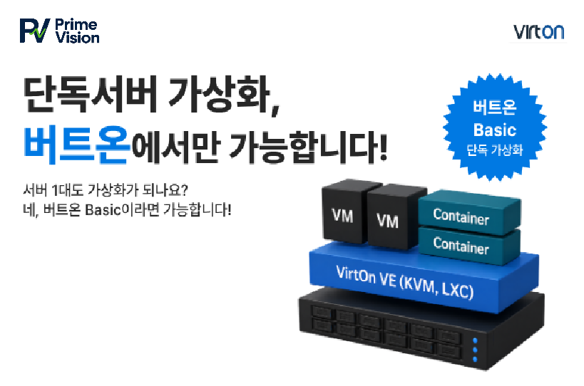
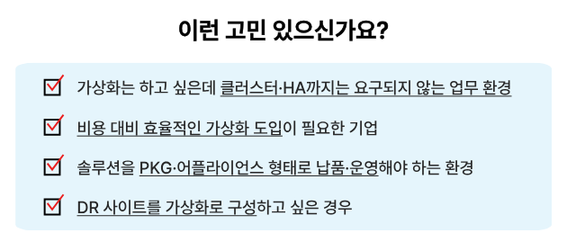
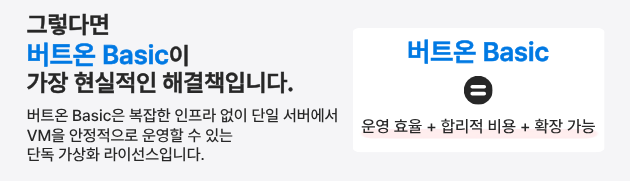
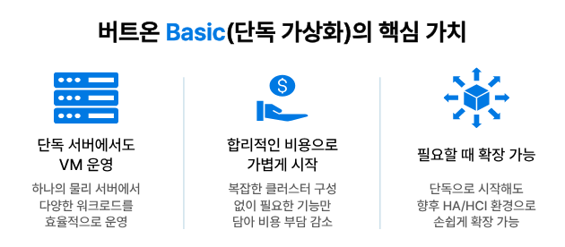
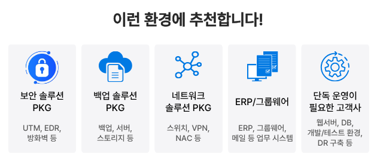
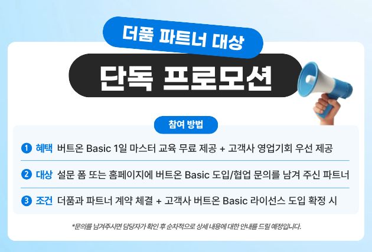

안녕하세요. 신뢰할 수 있는 IT 서비스 플랫폼 프라임비전입니다.
가상화를 도입하려고 하면 많은 분들이 먼저 클러스터, HA, HCI 같은 복잡한 구성을 떠올립니다. 하지만 모든 환경이 그렇게까지 무거운 구조를 필요로 하지는 않습니다. 보안·백업·네트워크 장비·ERP·그룹웨어처럼 단일 서버에서도 충분히 안정적으로 운영 가능한 시스템이라면 오히려 단독 서버 기반 가상화가 더 합리적인 선택이 될 수 있습니다.


(https://www.pvcorp.co.kr/contact.jsp)


가상화는 반드시 큰 규모로 시작해야 하는 기술이 아닙니다.<br><br>중요한 것은 현재 환경에 맞는 방식으로 시작하는 것입니다.<br><br>버트온 Basic은 단독 서버 환경에서도 충분한 가상화 운영이 가능하도록 설계된<br><br>현실적인 선택지 입니다.|

프라임비전 주식회사 jslee233@pvcorp.co.kr 경기도 용인시 기흥구 중부대로 184, 힉스유타워 A동 1514호 010-2336-4767